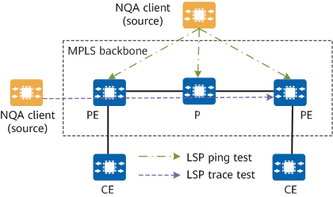

On IP networks, multiprotocol label switching (MPLS) traffic engineering has become an important tool in managing network traffic, reducing network congestion, and ensuring QoS. MPLS adds a connection-oriented control plane to a connectionless IP network, which facilitates IP network management and operations. To learn about the running status of an MPLS network in real time, you can check the network status and performance indicators using NQA tests of label switched path (LSP) ping and LSP trace types.

Test Type |
Application Scenario |
|---|---|
LSP ping test |
This test can be used to detect the connectivity, packet loss rate, and delay on an MPLS network in an E2E manner. |
LSP trace test |
This test can be used to detect the connectivity, packet loss rate, and delay hop by hop on an MPLS network, as well as the packet forwarding path. |